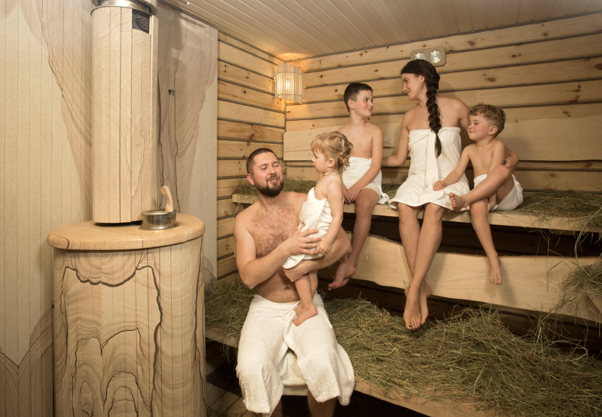

Как сходить в баню с пользой для ума и тела
Посещение парной – традиция русского народа, сохранившая с давних времен. Еще тогда считалось, что «баня парит, здоровье дарит». Сейчас народная поговорка подтверждена научными фактами, поэтому баня превосходно вписывается в популярную концепцию здорового образа жизни. Что же происходит с организмом во время посещения парной?
Польза от русской бани
Самый большой орган человека – это его кожа. Она занимает двадцать процентов от общей массы тела. Высокий уровень влажности, контрастная смена температур и энергичный массаж, получаемый при использовании веников, способствуют разглаживанию морщин, очищению кожных покровов от ороговевших клеток. Выделительная система при этом избавляется от токсинов и шлаков, производя невероятный омолаживающий эффект не только снаружи, но и внутри организма.
Самый большой орган человека – это его кожа. Она занимает двадцать процентов от общей массы тела. Высокий уровень влажности, контрастная смена температур и энергичный массаж, получаемый при использовании веников, способствуют разглаживанию морщин, очищению кожных покровов от ороговевших клеток. Выделительная система при этом избавляется от токсинов и шлаков, производя невероятный омолаживающий эффект не только снаружи, но и внутри организма.
Лечебный эффект русской парной
Баня – проверенное веками средство от разных хворей. Кроме несомненного косметического эффекта, она благотворно влияет на самочувствие при следующих заболеваниях:
- ревматизм и радикулит – благодаря тепловому излучению камней организм получает мягкий глубинный прогрев;
- несварения желудка, нарушения моторики кишечника – парилка активизирует работу ЖКТ, рекомендуется при язвенной болезни (не в острой стадии);
- насморк, сухой и мокрый кашель излечиваются за счет ингаляционного эффекта;
- ушибы, растяжения мышц и сухожилий – ускоренное кровообращение способствует рассасыванию синяков и гематом;
- проблемы мочеполовой сферы – стимуляция нервных волокон, иннервирующих паховую область и таз, предотвращает преждевременную эякуляцию и раннее развитие импотенции.
- ревматизм и радикулит – благодаря тепловому излучению камней организм получает мягкий глубинный прогрев;
- несварения желудка, нарушения моторики кишечника – парилка активизирует работу ЖКТ, рекомендуется при язвенной болезни (не в острой стадии);
- насморк, сухой и мокрый кашель излечиваются за счет ингаляционного эффекта;
- ушибы, растяжения мышц и сухожилий – ускоренное кровообращение способствует рассасыванию синяков и гематом;
- проблемы мочеполовой сферы – стимуляция нервных волокон, иннервирующих паховую область и таз, предотвращает преждевременную эякуляцию и раннее развитие импотенции.
Заголовок 4
Заголовок 5
Заголовок 6
| Порода | Плотность г/см³ |
Коэффициент теплопроводности Вт/(м*К) |
Удельная теплоемкость кДж/(кг*К) |
|---|---|---|---|
| Базальт Базальт | 2,6—3,25 | 0,4—3,5 | 0,5—2,1 |
| Белый кварц | 2,6—2,65 | — | 0,75 |
| Габбро-диабаз | 2,79—3,3 | 1,7—3,3 | 0,8—0,9 |
| Гранит | 2,34—2,76 | 1,1—3,9 | 0,2—1,5 |


{kind=link}
{kind=link}
{kind=link}